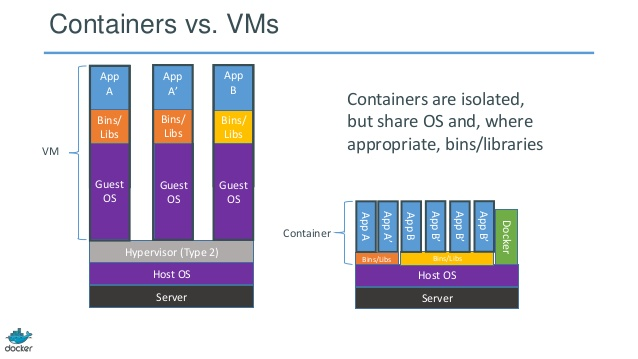
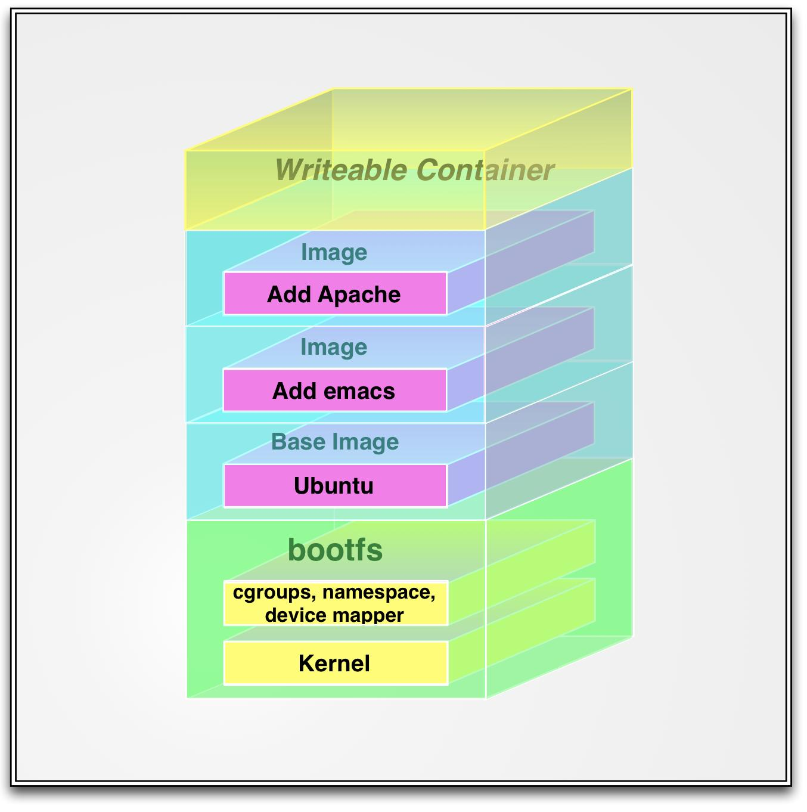

Docker from zero to hero
A friday approach to docker containers
Created by Diego Lendoiro / @sinvitaminas
What is this all about?
- Who is this guy and why is he talking to me?
- What is docker?
- Why docker?
- Docker internal basics
- Docker cli at a glance
- Dockerfiles
- Demo
- Flame the speaker
Who is this guy?
and why is he talking to me?
Diego Lendoiro
- Telecom Engineer
- GNU/Linux Enthusiast for a loooong time
- Worked as a System (now they call it Devops) Engineer for 3+ years
- You can follow my randomness in twitter as @sinvitaminas
- Been playing with the blue whale and friends for a little while
What is docker?
“Docker is an open platform for developing, shipping, and running applications. Docker is designed to deliver your applications faster. With Docker you can separate your applications from your infrastructure AND treat your infrastructure like a managed application. Docker helps you ship code faster, test faster, deploy faster, and shorten the cycle between writing code and running code.”

You can think of it as:

Or, as most people say, you can think of it as:

So...
Docker is about Packaging, isolating and running
Your Applications
Why docker?
Remember, remember...
“F*CK, my VirtualBox is too slow!!”
“you need my config file to run it”
“I'm tired of mocking my services”
Why docker?

Why docker?
Because...
- faster than most virtualization solutions
- small overhead
- easier way to deploy fully working applications in your team
- ideal for Service Oriented Applications
- under heavy development with a huge community
Great, So I will start using docker
EVERYWHERE
NO
Docker Internal basics
OS-Level virtualization
- 2007 first release of cgroups
- 2008 first release of Linux Containers (LxC)
- 2013 3.8 kernel first includes namespaces
- 2014 Docker 1.0 is released
Docker architecture

Docker Images
Persistence
Containers are not persistent by default
Persistence must be achieved through VOLUMES
Network
Containers get random IP addresses
Automatic bridge between host and container
Multi container apps need linking
Docker CLI at a glance
Dockerfiles or "build that image NOW"
Basic "bash" templates to automate docker image builds
Perfect for CVS different environments or stages
Uploadable to docker hub for sharing
Basic dockerfile
FROM debian:latest
MAINTAINER diego.lendoiro@openhost.es
RUN apt-get update && \
apt-get install -y --force-yes \
git \
nginx-full
EXPOSE 80
CMD [ "nginx", "-g", "daemon off;" ]
Flame the speaker

It's Friday so...